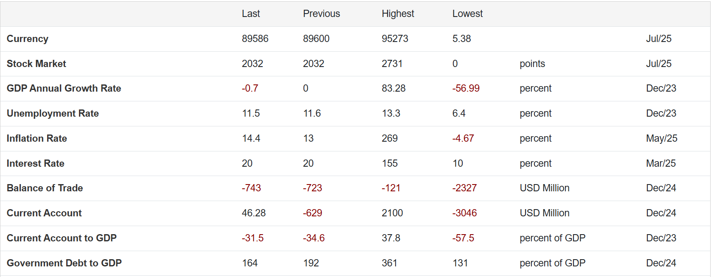
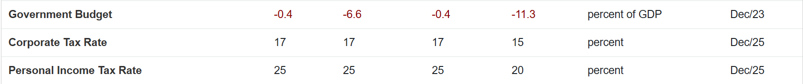

Where Does Your Money Go?
In a time of economic crisis, understanding how public funds are spent is more important than ever.
Our Governmental Budget section breaks down how the Lebanese government allocates taxpayer money — from essential services like healthcare and education to infrastructure and public salaries.
We turn complex budget data into simple, accessible visuals so you can see exactly where your contributions are going, and hold institutions accountable.
Transparency starts here.
2025 Lebanese Budget Breakdown:
- 53% — Salaries & Social Benefits
- 16% — Operating Costs (Goods & Services)
- 7% — Debt Servicing
- 10% — Capital & Infrastructure
- 8.5% — Education
- 8.9% — Healthcare
- 12% — Defense & Security
These numbers help shed light on national priorities. Over half the budget goes to public salaries, while health and education remain under 10% each.
This is why transparency and accountability matter now more than ever.


🇱🇧 Lebanon's Key Economic Indicators (2024–2025)
📉 Currency & Financial Markets
- Currency Rate: 89,586 LBP/USD (Jul 2025)
→ Sign of severe currency devaluation and ongoing instability.
- Stock Market Index: 2,032 points (Unchanged)
→ Market stagnation reflects low investor confidence.
📊 Economic Growth & Jobs
- GDP Growth Rate: -0.7% (Dec 2023)
→ Economic contraction, signaling continued recession.
- Unemployment Rate: 11.5% (Dec 2023)
→ High joblessness, especially in youth and informal sectors.
💸 Prices & Interest
- Inflation Rate: 14.4% (May 2025)
→ Rising cost of living, decreasing purchasing power.
- Interest Rate: 20% (Mar 2025)
→ High rates aimed at controlling inflation, but discourage borrowing and investment.
📦 Trade & External Accounts
- Balance of Trade: -743 million USD (Dec 2024)
→ Lebanon imports much more than it exports.
- Current Account Balance: +46.28 million USD (Dec 2024)
→ Slight improvement due to remittances or aid.
- Current Account to GDP: -31.5% (Dec 2023)
→ Still heavily reliant on foreign inflows.
🏧 Public Finance
- Government Debt to GDP: 164% (Dec 2024)
→ Debt is 1.6× the economy — critically high.
- Government Budget Balance: -0.4% (Dec 2023)
→ Small but persistent budget deficit.
🧾 Taxation
- Corporate Tax Rate: 17% (Dec 2025)
→ Moderate for businesses.
- Personal Income Tax Rate: 25% (Dec 2025)
→ High on paper, but enforcement remains weak.